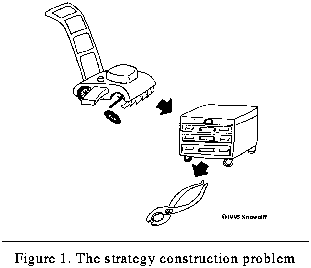
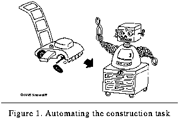
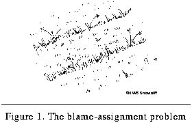
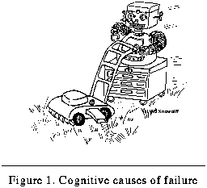
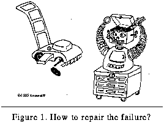

Table of
Contents
Table of
Contents
 Previous Section
Previous Section
Table of
Contents
Previous Section
It tends to be a perfunctory courtesy for an author to acknowledge the contributions of colleagues in works as large as this one. But in my case, this debt is necessarily incurred because it is so difficult at times to distinguish the original work from that of so many talented people with whom I have had contact. For example, in countless discussions with my advisor, Ashwin Ram, it is often difficult to remember who had a particular idea first. Indeed, my interaction with Ashwin has been more like a grand synthesis of ideas than like a stereotyped conversation where participants exchange fully sovereign propositions. Social intercourse is by nature a mingling of ideas (a true "conception," if I may use the metaphor), and so to identify the father of the idea is often impossible. Furthermore, I am almost convinced that there is nothing a writer can put to paper, the essence of which has not been said previously. One need only look hard enough and know the literature well enough to find the original references. Likewise, this thesis contains the germs of thought from many friends, colleagues, and distant siblings. Here I would like to acknowledge a few of those people who, although not directly quoted in the text, have nonetheless made a deep impression upon this work by their fresh infusion of ideas, support, criticism, and fellowship.
First and genuinely foremost, I must recognize Ashwin. For me, I could not have had a more perfect advisor. Ashwin has given me an especially long tether from which to work, while simultaneously challenging me to discipline myself. Although he has encouraged independence, he has also intervened at auspicious moments to point out corrections, clarifications, and insights when I needed them the most. This balance has been most rewarding, and I do not know where he has discovered the time to provide such leadership. He is one of the most prolific members of the faculty in the College of Computing, yet he always keeps an open door for discussing the issues as they arise. I also cannot fathom how he manages all of the students, projects, readings, publications, classes, and grant proposals, but his sheer volume of productivity has been an inspiration to us all, especially to me. He represents the true prototype from which the category intellectual is derived.
The truth is that Georgia Tech is a great place to become an intellectual and to do science (or engineering, depending on one's persuasion). The environments, both within the AI Group and within the multi-college context of cognitive science at Tech, have made for a wonderful melange of experience. In particular, my committee has done much to support an interdisciplinary research emphasis within each area they represent. Janet Kolodner has inspired me from the beginning of my graduate career, and I owe much of my cross-disciplinary bias and interests to her. Without Janet, there never would have been a Cognitive Science Program at Georgia Tech, nor would I have become nearly as excited about the business of cognitive science and the issues it entails. I also thank Mimi Recker, especially for the Berkeley protocols and the long conversations we had on the subjects of cognitive science. Her mix of computer science, psychology and educational research has made me appreciate the complexity and the rewards of investigation that crosses the standard disciplinary boundaries. Tony Simon, Kurt Eiselt, and Nancy Nersessian have done likewise, each examining issues at the intersection between computing and psychology, computing and psycholinguistics, and computing and philosophy, respectively. All of these influences have given me a unique insight into some amazing and intriguing worlds that indeed surpass the best fiction.
The students involved in cognitive science have also had many influences. For instance, Chris Hale examined how humans troubleshoot device faults and make explanations, while Mike Byrne looked at everyday memory-errors. Discussions with both have helped make this thesis a more complete cognitive science work. In Industrial and Systems Engineering, the Center for Human-Machine Systems Research includes many people who participate in cognitive science as well. In particular, I wish to acknowledge the input of S. Narayanan (now at Wright State University) and Ellen Bass. But most of all, within the AI group and especially within Ashwin's IGOR research group, many friends have made Georgia Tech a more interesting and productive place to work. In particular, Mark Devaney has helped, not only with conceptualizations, but with the programming of the Tale-Spin and script application extensions of Meta-AQUA that enabled the empirical evaluation found in Chapter IX. Many others in the AI group have also contributed to the research, to reading chapters, and to the close friendships that exist between the students. Among these friends (but without constituting an exhaustive list) are Michael Pearce, Justin Peterson, Eleni Stroulia, Sam Bhatta, Kavi Mahesh, Kenny Moorman, Janis Roberts, Juan Carlos Santamaria, and Tucker Balch.
Many people in the College and elsewhere at Georgia Tech have made important impacts. Special thanks must be given to John Goda for originally encouraging me to come to Tech and Ed Rumiano for encouraging me to enter the doctoral program. Included with these two, I must also mention Gus Baird, Richard Billington, Stan Carpenter, Sue Farrell, Bud Foote, Peter Freeman, Chris Hertzog, Cindy Hmelo, Carolyn Russell, Tim Salthouse, and Andy Smith. Outside of Tech many people have also made contributions, and I wish to briefly list them: Larry Barsalou, Robert Cox, Eric Domeshek, John Dunlosky, Michael Freed, Tom Hinrichs, David Leake, Joel Martin, Rüdiger Oehlmann, Michael Pazzani, Foster Provost, Mike Redmond, and Philip Siegmann. And finally, I thank Allyana Ziolko for karmic encouragement, a category that transcends both space and time.
But despite all of these significant contributions, this dissertation might never have come to fruition if it were not for the tireless effort and understanding of my wife Jennifer Snow Wolff Cox. She has tolerated my impatience, soothed my irritation, and been there when I needed her the most. She has also found time to contribute directly to this thesis. It was Jennifer who suggested the quotation from Alexander Pope, who drew all of the robot illustrations, who proofed the entire document, and who provided a constant stream of suggestions that improved both the content and the presentation (while concurrently attending to her own work and ambitions, e.g., finishing her Masters). She has spent hours working on details such as the bibliography and index to make this thesis a complete work. Thank you for everything, Jennifer, especially for being yourself during my mad epic.
This research has been supported by the National Science Foundation under grant number IRI-9009710, by the Air Force Office of Scientific Research under grant number F49620-94-1-0092 and by the Georgia Institute of Technology. I also thank King Features Syndicate, New York, for special permission to reprint a strip of the "Walnut Cove" cartoon. Elizabeth Nolan was especially helpful and kind in facilitating the reprint request. This document was prepared almost entirely with FrameMaker (Version 4) under Unix on an IBM RS6000. Some figures were created using Draw on a NeXT Machine and Excel on a Macintosh. The graphs were created with gnuplot. I also used emacs and the fm2html filter to create a hypertext version of this document at the following universal resource locator (URL) on the World Wide Web:
ftp://ftp.cc.gatech.edu/pub/ai/ram/git-cc-96-06.html
This thesis constructs a theory of introspective multistrategy learning. In large part, the work represents a machine learning theory in the area of multistrategy systems that investigates the role of the planning metaphor as a vehicle for integrating multiple learning algorithms. To another extent, the research is a cognitive science treatise on a theory of introspective learning that specifies a mechanistic account of reasoning about reasoning failure. The central idea is to represent explicitly the normal reasoning of an intelligent system in specific knowledge structures. When failure occurs, the learner can then examine the structures to explain what went wrong and hence to determine the proper learning methods. Thus, the overarching goal of the theory is to understand systems that turn inwards upon themselves in order to learn from their own mistakes.
I first became interested in reflective systems that process representations of themselves when working in the laboratory of Larry Barsalou. He and Chris Hale were building a theory of explanation in humans within the domain of troubleshooting small engine mechanics. I spent a year programming a system called MECH (Barsalou, Hale & Cox, 1989) that was designed to present domain knowledge about lawn mower engines, test their troubleshooting ability, and collect reaction times and other responses. In addition to its data collection mode, the program had a training mode with which information could be presented to the student before the test phase of a given experiment.
The MECH system had the ability to read data files that contained the entire domain theory: the engine system-subsystem decomposition, the test and repair screens, user selection functions, and associated textual data. With these files the experimenter could build domain-independent informational systems, not simply variations about engines. Included in the file formats was a means for specifying graphics screens that would be displayed at each subsystem along with the associated text screen for the user. Thus, the user could traverse the data base along graphical links to move from the fuel subsystem to the details of the carburetor component within that system, for example.
So, given this flexible capability at the end of the project, I conceived the idea to compile all of the comments for the program code and its subsystem modules. I designed a number of graphics screens that illustrated the hierarchical structure of the modules, functions, data structures and code. I then bound the appropriate program comments to the associated graphics screens using the generic file formats with which Chris had built the engine explanation system. I could then turn MECH upon its own descriptions so that it would explain itself to Larry or Chris or any subsequent programmer they hired. The concept was simple and intriguing and stayed with me until this time.
This thesis poses the question "How can a reasoner create a learning strategy when it fails at its reasoning task?" The problem is called, simply enough, the learning-strategy construction problem. As a metaphor, consider a lawn mower. When the lawn mower breaks down, someone has to repair it so that it will work right in the future. Strategy construction is like choosing the right tools from the a tool box and planning how to use them to fix the broken lawn mower (see Figure 1). The person who does the repair is usually the owner, that is, if the task is not too hard. One of the things that the repairman has to worry about, however, is that the sequences of repair steps must be ordered properly so that they do not interfere with the overall goal of fixing the machine. For example, if the lawn mower runs out of gas because it has a small hole in the gas tank, the repairman must weld the damaged tank before adding gasoline to the tank. If the reverse order is chosen, then the gas will drain out of the tank and the entire machine might ignite (if not explode) when welding the fuel tank.
 Figure 1. The strategy construction problem
Returning to the task of repairing the knowledge base of the reasoner, the problem is to choose and combine a few learning algorithms, given some suite of standard fixes, in order to fix the knowledge base of the system. Researchers usually perform this task. But in the research presented here, we want to automate the task of choosing the algorithms and let the machine solve the problem autonomously and dynamically. For the task of fixing the lawn mower, this is like putting a robot on top of the toolbox (see Figure 2).
 Figure 2. Automating the construction task
When it comes to picking tools to fix the lawn mower, the task is usually straightforward. The symptom of failure is often closely associated with the fix because the fault that caused the symptom is directly observable. For example, the lawn mower does not mow straight because the wheel has come loose. Because the cause of the error is readily apparent, the tool for the job is easy to determine. The task of assigning blame to a given failure is trivial because the cause is directly connected to the symptom.
But at other times, determining the cause of failure is much more problematic because the symptom of failure is more indirectly related to the fault. One cannot always tell what is wrong (and thus what needs to be repaired) by simply looking at the mower. If the lawn-mower makes a noise and the grass is not cut properly (see Figure 3), then the problem of assigning blame is that the fault must be inferred from the outcome of the performance task (i.e., grass cutting), rather than being directly observed. From a trace of the mower's path, the reasoner has to figure out what went wrong.
 Figure 3. The blame-assignment problem
When trying to reason about what goes wrong in an intelligent system, the problem is compounded. A cognitive system is much more complicated than a simple lawn mower and the chain of events between the initiation of a train of thought and its outcome is longer and more convoluted. With most intelligent systems no observables exist except the conclusions from long series of inferences. Therefore it is imperative that an explicit representation for the reasoning be present so that the system can "observe" it.
Moreover, even with mowing the lawn, the problem may be not so much with the device that cuts the lawn, but with the agent who cuts it (see Figure 4). That is, the reason the lawn is cut poorly may reside with the ability of the one doing the pushing. In our case, the fault may reside with the knowledge with which inferences are made rather than with the form of the logic used to make the inference.
 Figure 4. Cognitive causes of failure
Therefore, to repair the situation so that the lawn is cut better in the future, it may be necessary to fix the knowledge that "drives" the performance task (the robot), rather than to fix the performance system itself (the mower). Figure 5 illustrates this point. This entails understanding the causes of the failure, explaining what went wrong with the reasoning that caused the failure, and knowing enough about one's own knowledge and the tools of knowledge repair to choose the right tools to fix the problem without letting these tools interfere with each other.
 Figure 5. How to repair the failure?
This thesis explores these issues from many perspectives. The intent is to look at the problem from both a technical and computational standpoint where we can analyze the representations and transformations useful in solving it mechanistically and to examine it from a synoptic and psychological standpoint to glean a bit of the human gestalt involved.
Table of Contents
 Next Section
Next Section